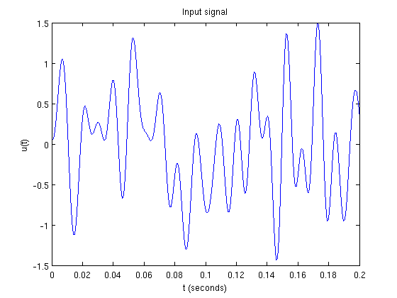
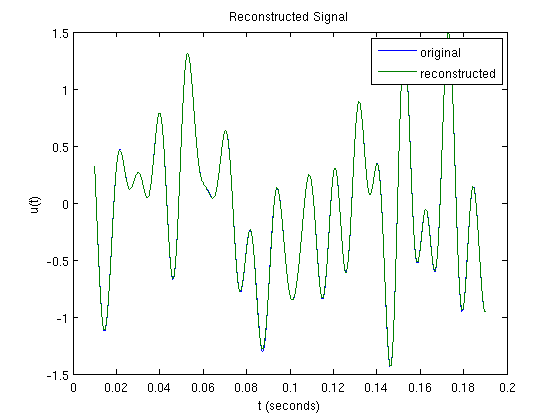

Time Encoding and Decoding Using Spline Interpolation
This demo illustrates the time encoding of a bandlimited signal with a leaky integrate-and-fire neuron and recovery of the signal using spline interpolation.
The demo corresponds to the example presented in Section 2.3 of the Consistent Recovery paper mentioned in the toolbox references.
Contents
Generating a Test Signal
Generate a noiseless signal 0.2 s long sampled at 1 GHz with a bandwidth of 100 Hz:
dur = 0.2; % duration dt = 1e-6; % sampling resolution fmax = 100; % bandwidth (Hz) t = [dt:dt:dur]; % time support
Truncate the time vector:
tr_vc = round(0.05*length(t)):round(0.95*length(t));
Use the maximum possible number of frequency components:
mc = floor(floor(t(end)/dt)*fmax*dt); rand('twister',0); randn('state',0); u = gen_test_signal(t(end)+(2*round(0.1*length(t))-1)*dt,dt,fmax,-Inf,mc);
Truncate first 100 values to eliminate discontinuities:
u = u((round(0.1*length(t))+1):end-round(0.1*length(t)));
Normalize the generated signal:
u = 1.5*u/max(abs(u));
plot(t,u); xlabel('t (seconds)'); ylabel('u(t)'); title('Input signal')
Time Encoding
Set the encoding parameters:
b = 3; % bias d = 0.8; % threshold R = 50; % resistance C = 0.01; % capacitance
Encode the signal:
tk = iaf_encode(u,dt,b,d,R,C);
Time Decoding
Recover the signal:
u_rec = consistent_decoding_LIF(cumsum([0,tk]),t,b,d,R,C); figure;plot(t(tr_vc),u(tr_vc),t(tr_vc),u_rec(tr_vc)); xlabel('t (seconds)'); ylabel('u(t)'); title('Reconstructed Signal'); legend('original','reconstructed');
Compute the SNR of the recovered signal:
snr = 10*log10(sum(u(tr_vc).^2)/sum((u(tr_vc)-u_rec(tr_vc)).^2))
snr = 41.2044
Author: Eftychios A. Pnevmatikakis
Copyright 2009-2011 Eftychios A. Pnevmatikakis